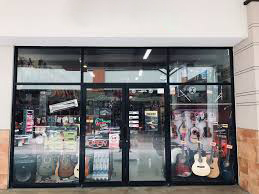
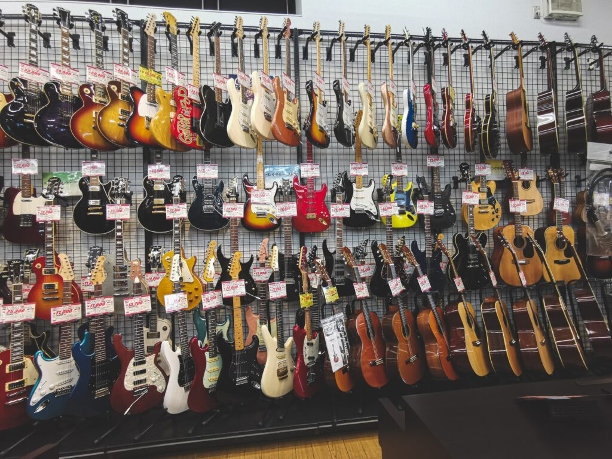
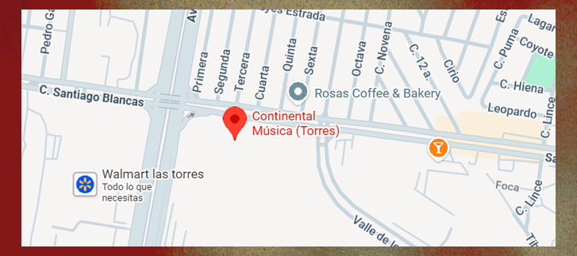

¿DONDE ENCONTRARNOS?
 Recibimos por contacto internacional variaciones de instrumentos, desde los mas basicos como las guitarras y pianos,
Recibimos por contacto internacional variaciones de instrumentos, desde los mas basicos como las guitarras y pianos,
hasta los mas complejos como baterias completas y contrabajos. nos ideamos en instrumentos de distintos materiales, para
que el cliente tenga mas variacion a la hora de escoger su nuevo instrumento, pues muchos musicos afirman que hasta en
la madera de un instrumento esta el alma y escencia del sonido producido

Arabella Music se encuentra ubicado en una zona comercial
accesible para el público, donde las personas interesadas en la música
pueden visitar fácilmente la tienda. El negocio está situado en una avenida
principal o en una plaza comercial, lo que permite que estudiantes, músicos
y clientes puedan llegar sin dificultad.

La tienda cuenta con un local amplio donde se exhiben diferentes instrumentos
musicales como guitarras, teclados, baterías, violines e instrumentos de viento, además de accesorios
musicales. También dispone de un área para atención al cliente y, en algunos casos, un espacio donde
se pueden probar los instrumentos antes de comprarlos.
 En conclusión, la ubicación de Arabella Music está
En conclusión, la ubicación de Arabella Music está
pensada para ser accesible, visible y conveniente para los clientes, lo que
contribuye al crecimiento del negocio y a la promoción de la música dentro
de la comunidad.
¡VISITANOS AQUI!
